Instalación y uso básico de Priiloader
Priiloader es una herramienta desarrollada por DacoTaco. Esta herramienta permite aplicar configuraciones (hacks) para mejorar, desbloquear y corregir muchas funciones del menú de sistema de Wii en la Wii U. Priiloader se carga antes que el menú de sistema de Wii lo que permite proteger y cambiar el arranque del sistema Wii en la Wii U.
Para usar esta guía necesitas:
- Una Wii U con el Homebrew Channel instalado en el modo virtual Wii.
- Un Wii Remote ya sincronizado con la Wii U (no importa si tiene Motion Plus o no).
- La tarjeta SD de la Wii U.
- Un dispositivo (PC o teléfono inteligente) para colocar archivos en la tarjeta SD.
Descarga los archivos necesarios
- Descarga Priiloader Installer:
- Descarga
Priiloader Installer (.ZIP). - Descarga Load Priiloader.
- Descarga
Load Priiloader (.ZIP). - Descarga Priiloader Wii U Forwarder. (Esto añade el icono Boot to Priiloader al menú de Wii U en Aroma.)
Coloca los archivos
Si la PC te pregunta si deseas combinar carpetas selecciona sí.
Si la PC te pregunta si deseas reemplazar archivos selecciona sí.
- En este punto debes tener la tarjeta SD conectada a una PC (o teléfono inteligente) para colocar los archivos.
- Descomprime el archivo
priiloader.zip. - Ignora el archivo
LICENSE. - Copia la carpeta
appsa la raíz de la tarjeta SD. - Descomprime el archivo
LoadPriiloader.zip. - Copia la carpeta
appsa la raíz de la tarjeta SD. - Descomprime el archivo
PriiloaderWiiUForwarder.zip. - Copia la carpeta
wiiua la raíz de la tarjeta SD. - Extrae la tarjeta SD de forma segura y conecta a la Wii U con la consola apagada.
Instala Priiloader
- En este punto debes tener la Wii U apagada con la tarjeta SD introducida.
- Enciende la consola y abre el icono de Wii en el menú de Wii U.
- Accede al Homebrew Channel.
- Carga Priiloader Installer (no confundir con Load Priiloader).
- Presiona el botón MAS ⊕︀ del Wii Remote para instalar Priiloader.
- Cuando la instalación termine presiona A en el Wii Remote para regresar al Homebrew Channel.
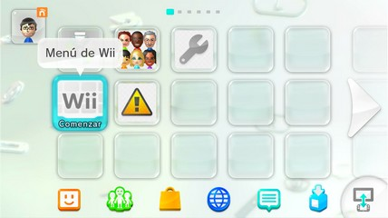
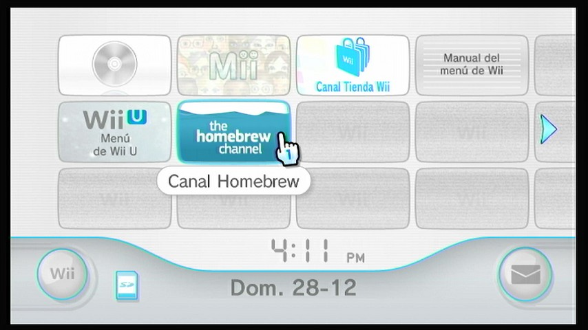
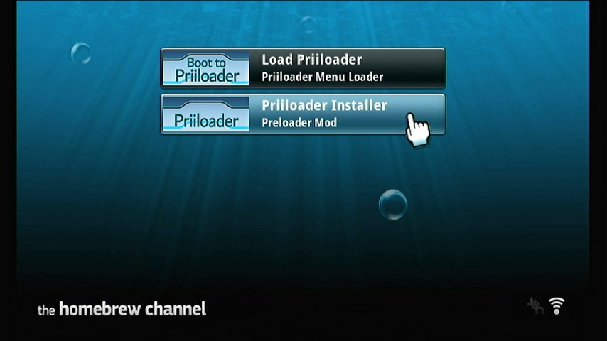
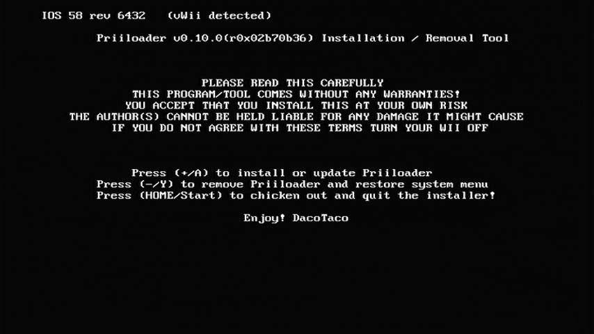
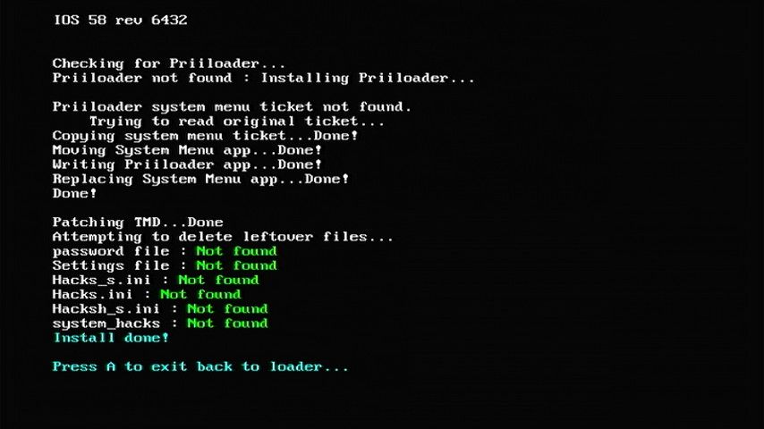
Acceder a Priiloader
- En este punto debes estar en el Homebrew Channel después de haber instalado Priiloader.
- En el Homebrew Channel presiona el botón HOME del Wii Remote y selecciona Salir al menú del sistema.
- La Wii U debe haber cargado el menú de Priiloader.
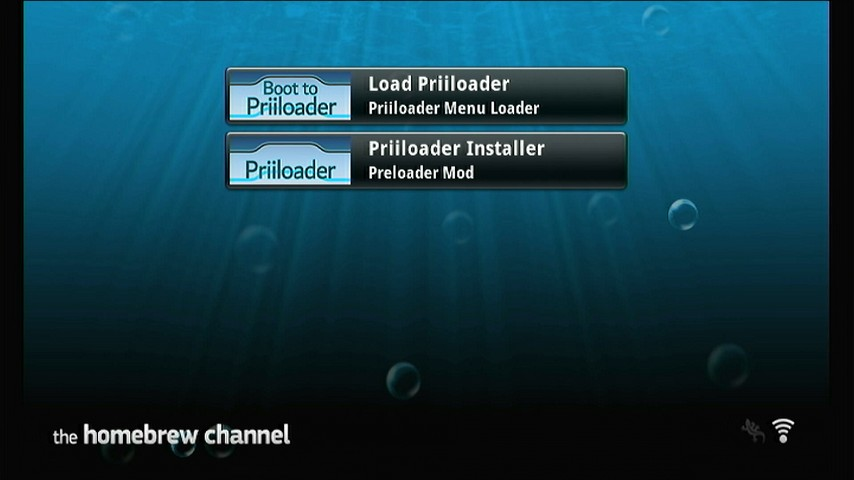
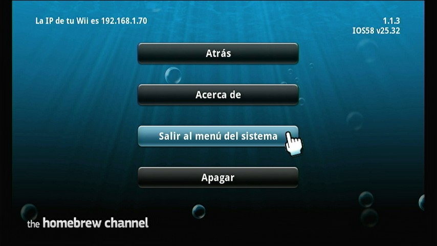
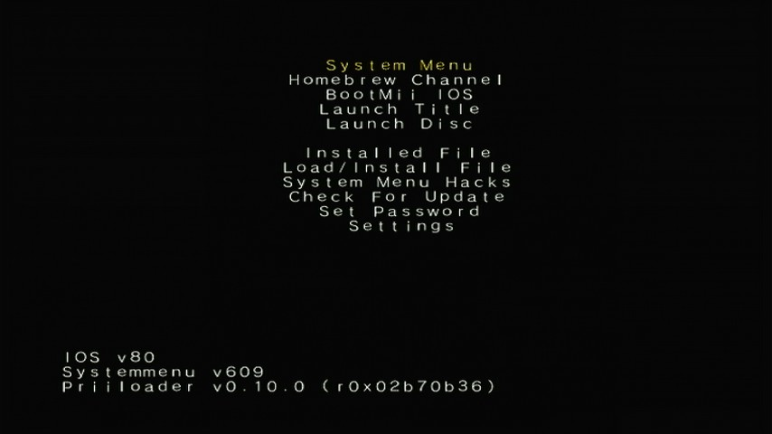
Posteriormente puedes acceder al menú de Priiloader cargando Load Priiloader desde el Homebrew Channel o abriendo Boot to Priiloader (Priiloader Wii U Forwarder) desde el menú de Wii U en Aroma.
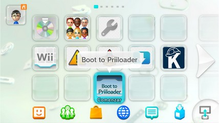
Uso básico de Priiloader
- En este punto debes estar en el menú de Priiloader.
- Usa el D-Pad del Wii Remote para bajar hasta la opción
System Menu Hacksy presiona A. - Usa las flechas del D-Pad del Wii Remote para habilitar las siguientes opciones:
- Block Online Updates.
- Wii System Settings via Options Button.
- Remove Deflicker. (Si la Wii U está conectada a una TV CRT entonces NO uses esta opción.)
- Usa las flechas del D-Pad del Wii Remote para bajar hasta la opción
save settingsy presiona A. - Presiona el botón B para regresar el menú principal de Priiloader.
- Usa las flechas del D-Pad del Wii Remote para subir hasta la opción
System Menuy presiona A.
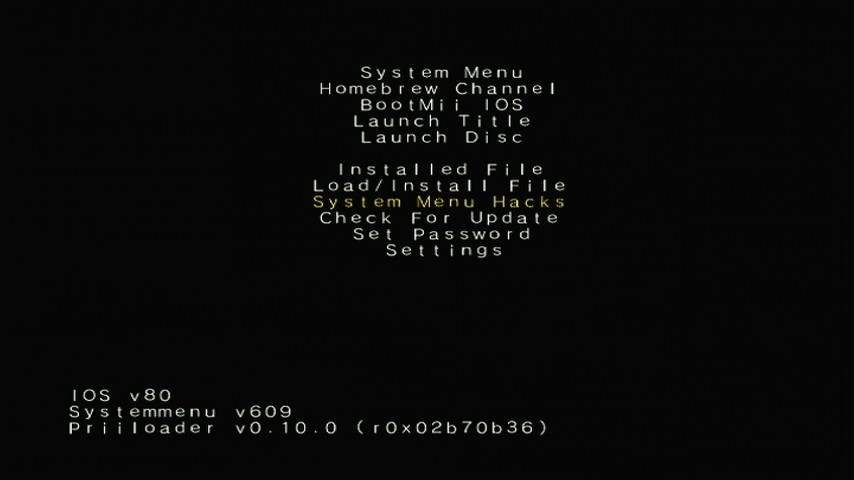
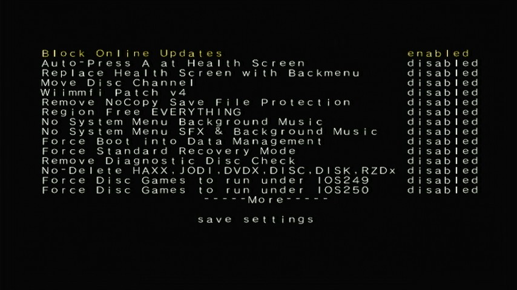
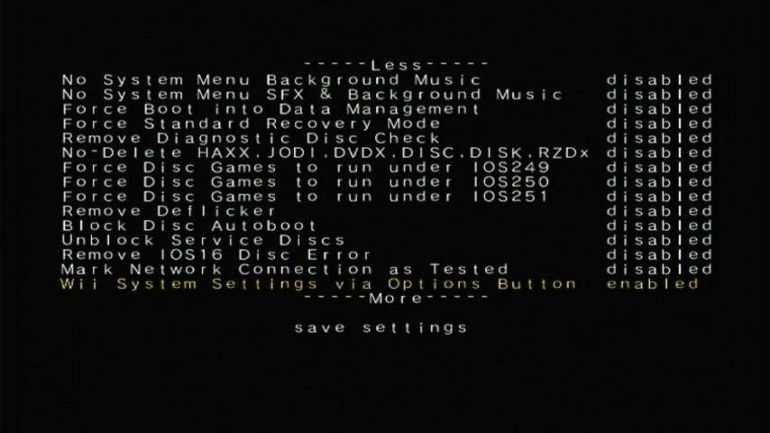
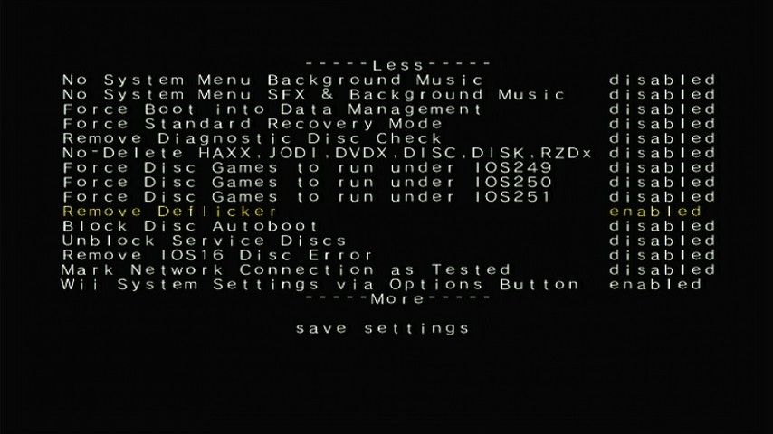
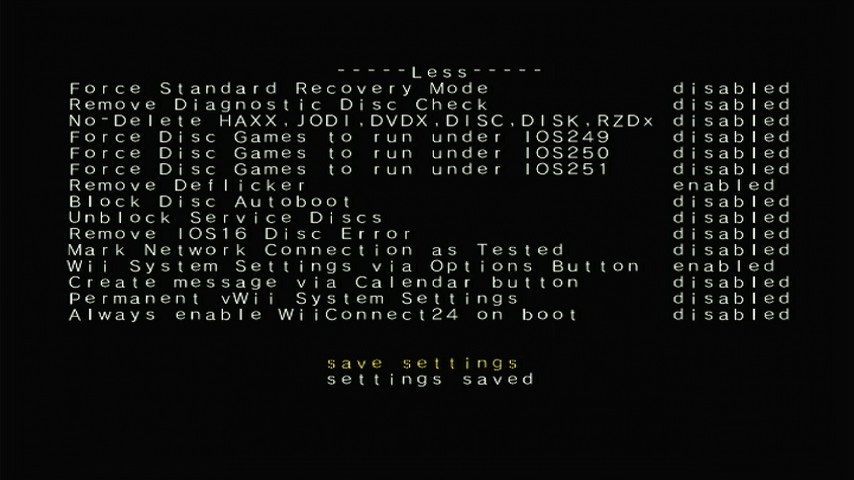
Aquí termina la guía de instalación y uso básico de Priiloader.
En el enlace de aquí puedes consultar preguntas frecuentes sobre el uso de Priiloader.